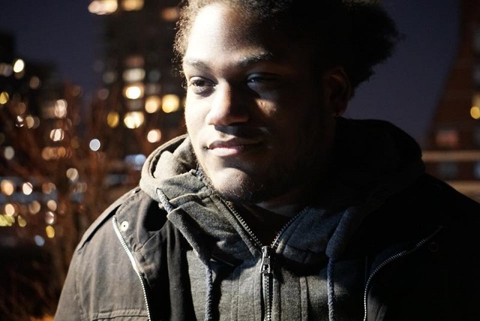
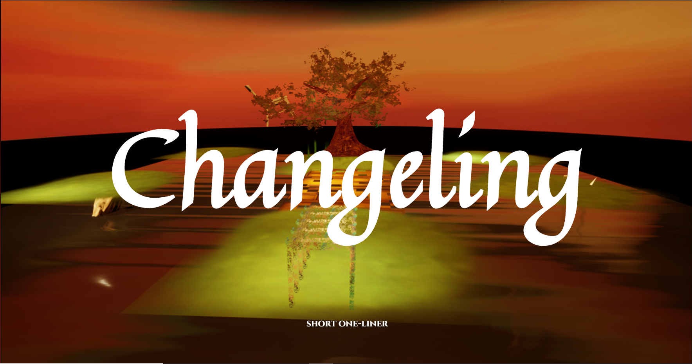

Justin Moniquette
Creative writer, Front-end developer, Avid gamer
Justin Moniquette
I'm a storyteller and graduate from Rochester Institute of Technology who can develop a website as well as an intriguing plot. Currently an online instructor, I teach the next generation of game developers, writers and web designers all the tools needed to bring their ideas to life.
When I'm not teaching or coding you can find me playing my favorite games across all consoles, writing my next novel or using Twine to plan out my next game.
Projects
EMBARK - The re-imagining of a classic
arcade game that encourtages
cultural discovery
(Click image to visit our team page)
Plinko Snek- A casual phone game that
combines games like Plinko and Skee
ball

Goal
The goal of this game was to create a casual gaming experience with intuitive controls and mechanics. The idea for the project came from a brainstorm session with my other team members in which we decided to combine the simple mechanics of Plinko and Skee-Ball with touch controls.
Summary
The game focuses heavily on using gravity to help control and navigate the falling snake with the goal of getting it into one of the point bins. Early on the only goal of the player is to navigate the snake into the highest point bin while also trying to collect coins to increase their score. As the player progresses to further levels new elements like cannons, bumpers, traps and the like are added to create added difficulty and complexity to the game.
My Contribution
For this project I was in charge of designing and developing the scoring system as well as the end of level UI that showed the player how they did on the level. I also assisted in creating several of the levels featured in the final deliverable of the game.
Looking Ahead
Done within a four week time period we were not able to add everything we wanted. If given more time we planned to added a store where the player could spend coins to add cosmetics to their snake as well as refine the levels and menus.
Changeling- A VR narrative driven
mystery that explores perspective and
how
it
changes the way people see the the world

Goal
The goal of this job was to create a companion website to the game being developed alongside it while providing information on the game and characters in unique surreal ways that matches the tone of the game.
My Contribution
For this job I was tasked as the team lead for the web team which focused on the creation of the companion website. My duties included directing the other members of the team during the development of the website as well as develop the page for the mother character in the game.
Looking Ahead
Only on the project for ten weeks, there was a lot I was not able to do because of time restrictions and lack of resources. Due to all the sites media coming from the art team there were many assets asked for that were not completed before my time on the project was finished. Because of this my contribution acts more as a starting off point or proof of concept instead of the finished product. If given more time, I would continue to polish the html of the page as well as include assets that better connect the image of the site to the game.